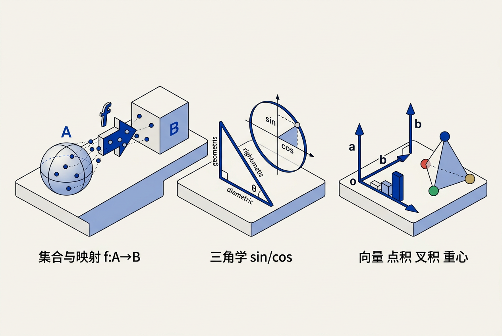
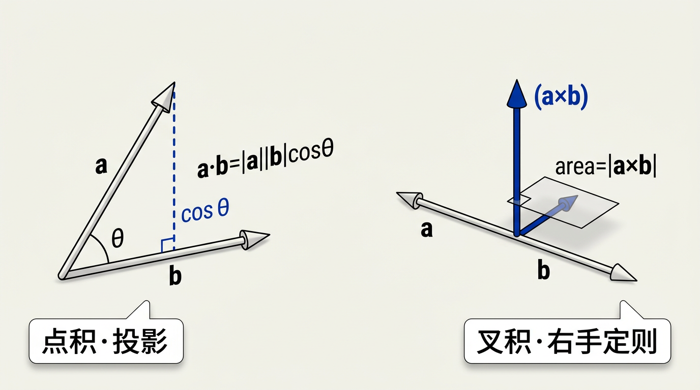
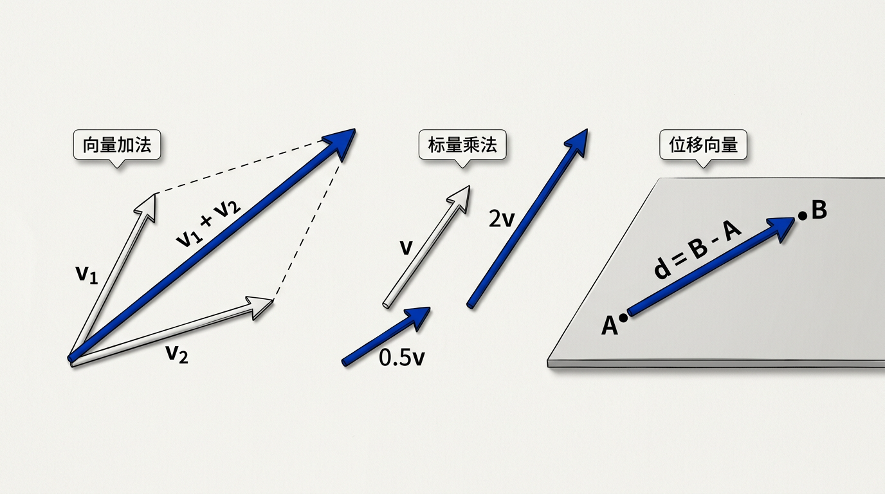
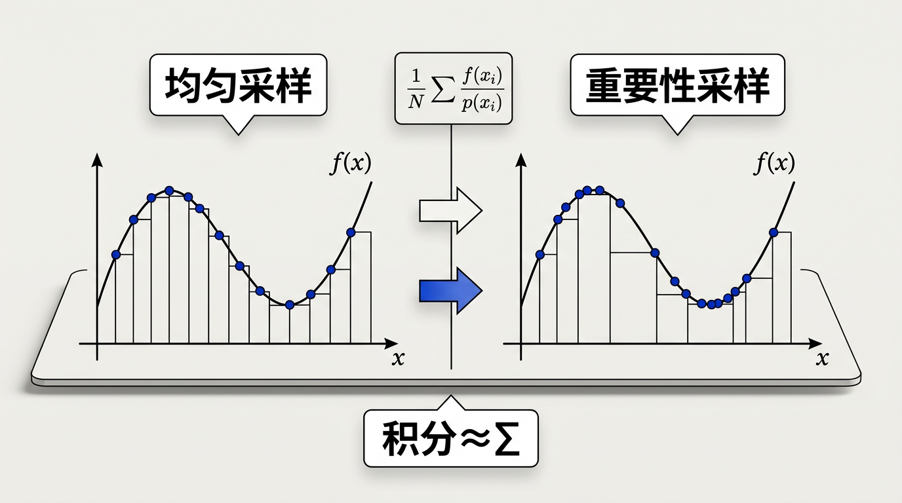

本讲义基于 Steve Marschner & Peter Shirley 所著《虎书》（Fundamentals of Computer Graphics）第5版第2章（p.31-79）杂项数学。
图形学必备的数学工具箱——集合与映射、二次方程求根、三角恒等式、向量与点积叉积、积分、曲线曲面表示、概率与蒙特卡洛。每节均给出几何直觉而非纯形式推导。
本版插画采用 Guizang 材质插画风格重新绘制。
计算机图形学的大量工作不过是将数学直接翻译为代码。数学越干净，产生的代码就越干净；因此本书大部分内容集中于使用恰好适合该项工作的数学。本章回顾来自高中和大学数学的各种工具，设计为更多地用作参考资料而非教程。它看起来像是一锅大杂烩——它确实就是；每个主题之所以被选中，要么因为它在"标准"数学课程中有点不寻常，要么因为它对图形学至关重要，要么因为它通常不在本科课程中以几何角度处理。除了建立本书中使用的记号体系外，本章还强调了一些有时在标准本科课程中被跳过的要点，例如三角形上的重心坐标。本章不旨在对材料进行严格处理；相反，强调的是直觉和几何解释。线性代数的讨论推迟到第6章，恰好在变换矩阵被讨论之前。鼓励读者浏览本章以熟悉涵盖的主题，并在需要时回头参考。本章末尾的练习题可能有助于确定哪些主题需要复习。

映射（mappings），也称为函数（functions），是数学和编程的基础。与程序中的函数类似，数学中的映射接受一个类型的参数并将其映射到（返回）一个特定类型的对象。在程序中我们说"类型"（type）；在数学中我们则标识集合（set）。当一个对象是某个集合的成员时，我们使用 ∈ 符号。例如 a ∈ S，可以读作"a 是集合 S 的成员"。
生活类比： 集合就像分类箱——标着"实数"的箱子里面有 3.14、-2、0 等等；标着"整数"的箱子里面有 …-2, -1, 0, 1, 2…。映射就是从一种箱子到另一种箱子的传送规则——你把一个实数（如 3.14）放进函数 f 里，出来一个整数（如 3，向下取整）。
给定任意两个集合 A 和 B，我们可以通过取两个集合的笛卡尔积（Cartesian product）来创建第三个集合，记为 A × B。集合 A × B 由所有可能的有序对 (a,b) 组成，其中 a ∈ A 且 b ∈ B。简写为 A² 表示 A × A。我们可以扩展笛卡尔积，从三个集合创建所有可能的有序三元组的集合，以及从任意多个集合创建任意长的有序元组。
想一想： 屏幕上每一个像素的位置 (x, y) 正是笛卡尔积 R × R = R² 中的一个元素。x 是水平坐标集合的一个成员，y 是垂直坐标集合的一个成员。整个屏幕就是两个一维坐标轴的笛卡尔积。当你写 pixel[x][y] = color，你实际上正在遍历一个笛卡尔积中的元素！
常见的集合包括：
注意尽管 S² 由嵌入三维空间的点组成，它处于一个可以用两个变量参数化的曲面上，因此可以被认为是二维集合。这种维度直觉——表面是二维的，尽管嵌入在三维空间中——在计算机图形学中反复出现，尤其是在纹理映射和曲面参数化中。
集合的基数（cardinality），记为 |A|，是该集合中元素的个数。对于有限集合，这就是数数；对于无限集合，情况要微妙得多。两个集合 A 和 B 如果存在双射 f : A → B，则称为具有相同的基数（或称"等势"），记为 |A| = |B|。这一思想——用一一对应来比较集合的大小而非数数——是集合论的基石，由 Georg Cantor 在 19 世纪建立。
形式化定义：
有限集：存在 n ∈ N 使得 |A| = n（能与 {1,2,…,n} 建立双射）
无限集：非有限集（不能与任何有限自然数集建立双射）
集合的序列比较：
|A| ≤ |B| ⟺ 存在单射 f : A → B
|A| = |B| ⟺ 存在双射 f : A → B
|A| < |B| ⟺ |A| ≤ |B| 且不存在双射（严格更大）
可数集（countable set）指基数不超过 |N|（自然数集大小）的集合——即可以将集合中的元素排列成有限或无限序列：a₁, a₂, a₃, …。可数无穷集的最基本例子是自然数 N、整数 Z 和有理数 Q。它们都可以被"编号"（存在一个双射到 N），尽管直觉上 Z 似乎"是 N 的两倍大"，但一一对应确实存在：0, 1, −1, 2, −2, …。
生活类比： 可数无穷集就像一家有无穷多房间的旅馆（Hilbert 旅馆）——即使已经住满，新来一位客人也可以让每个房间的客人搬到下一间，从而腾出 1 号房间。而不可数无穷——如实数集 R——则有"太多"元素，即使将所有自然数房间翻倍也无法容纳。Cantor 用他著名的对角线论证证明了这一事实。
不可数集（uncountable set）的基数严格大于 |N|。实数集 R 是不可数的：区间 [0,1] 中的每个实数都可以表示为无穷小数 0.d₁d₂d₃…，Cantor 的对角线证明展示了无法将这些实数排列成一个序列——总是存在一个对角线构造出的数不在序列中。连续统的基数记为 c（continuum），可以证明 |R| = |R²| = |Rⁿ| = c，即直线、平面和 n 维空间都有相同的基数。这在图形学中有隐含意义：曲面 S² 上的点与实线上点的"个数一样多"。
想一想： 为什么图形学需要关心可数与否？浮点数的集合是有限的（32 位浮点约 2³² 个不同的值），但在数学模型中，我们假设颜色光谱是连续统 R 的片段。当你对一个像素做蒙特卡洛积分时，你实际上在用有限个样本逼近一个不可数连续统上的积分。QMC 方法的低差异序列正是利用了某种"更均匀地覆盖不可数域"的性质。
集合 A 的幂集（power set），记为 P(A) 或 2^A，是 A 的所有子集构成的集合。形式化地：
P(A) = { S | S ⊆ A }
若 |A| = n（有限），则 |P(A)| = 2^n——这就是记号 2^A 的来源：每个元素要么在子集中要么不在，给出 2^n 种组合。对于计算机图形学，幂集概念出现在场景图（scene graph）层级结构的分析中（每个节点可管理其子节点的任意子集）以及可见性裁剪（一组物体有多少种遮挡组合）。
Cantor 定理指出：对任意集合 A，|A| < |P(A)|——即幂集的基数严格大于原集合的基数。特别地，|N| < |P(N)| = |R| = c，提供了一条从可数无穷构造不可数无穷的桥梁。连续迭代幂集操作产生无穷递增的基数层级（ℶ₀, ℶ₁, ℶ₂, …，称为 beth 数），这虽然超出了图形学日常需求，但展示了"无穷"并非单一的——存在不同"大小"的无穷。
映射的记号使用箭头和冒号，例如 f : R ↦ Z，可以读作"存在一个名为 f 的函数，它接受一个实数作为输入并将其映射为一个整数。"这里，箭头前的集合称为函数的定义域（domain），右边的集合称为目标（target）。程序员可能更熟悉以下等价的语言："存在一个名为 f 的函数，它有一个实数参数并返回一个整数。"换句话说，以上的集合记号等价于常见的编程记号：
integer f(real) ← 等价于 → f : R ↦ Z
所以冒号-箭头记号可以看作是一种编程语法。就这么简单。
点 f(a) 称为 a 的像（image），集合 A（定义域的一个子集）的像是目标中包含 A 中所有点的像的子集。整个定义域的像称为函数的值域（range）。
如果我们有一个函数 f : A ↦ B，可能存在一个逆函数（inverse function）f⁻¹ : B ↦ A，它由规则 f⁻¹(b) = a 定义，其中 b = f(a)。仅当每个 b ∈ B 都是 A 中某个 a 的像（即值域等于目标），并且该 a 唯一（即 f(a) = f(a') 时必然有 a = a'）时，此定义才成立。这样的映射称为双射（bijections）。双射将每个 a 映射到唯一的 b，并将每个 b 映射到唯一的 a。在实数和实数之间，一对一映射必然产生双射，但在 R² 和 R² 之间则未必。例如，将 (x,y) 映射到 (x, y²) 不是双射，因为 (1,1) 和 (1,−1) 都映射到 (1,1)。在图形学中，纹理映射和坐标变换频繁使用双射关系，尽管实践中它们往往是局部而非全局的双射。
生活类比： 双射就像电影院的对号入座——每个座位（B 中元素）恰好对应一个人（A 中元素），每个人也恰好有一个座位。如果两个人坐了同一个座位（非单射），或者有座位空着（非满射），就无法建立一一对应。UV 纹理映射本质上就在追求这种"对号入座"——3D 模型上每个点恰好对应纹理图片上的一个像素位置。
想一想： 为什么纹理映射需要双射？如果你的 3D 模型上两个不同的点被映射到纹理图片上同一个像素位置，那么这两个点就不得不显示同一种颜色——这叫做"纹理拉伸"或"纹理重复"。反过来，如果纹理上的某个像素从未被任何 3D 点使用，那段纹理数据就浪费了。理想的 UV 展开追求的是接近双射的映射。
我们经常希望指定一个函数处理值受限的实数。其中一个这样的限制是规定值在某个区间中。区间的记号表示是：用圆括号排除端点，用方括号包含端点。例如 (0,1) 表示大于 0 且小于 1 的所有数字。[0,1] 表示大于或等于 0 且小于或等于 1 的所有数字。我们使用特殊的记号 R⁺ 表示正实数，R⁻ 表示负实数。区间记号在图形学中无处不在——从定义光线参数 t ∈ [0,∞) 的范围，到指定纹理坐标 (u,v) ∈ [0,1]² 的值域。
一个二次方程（quadratic equation）具有以下形式：
Ax² + Bx + C = 0
其中 x 是实数未知量，A、B、C 是已知常数。对于二维图形，二次方程非常有用——例如，光线与球体的交点可以通过二次方程求解。如果你习惯于以其他形式书写它，只需将常量整理为匹配的形式。
求解二次方程的标准公式是：
x = (−B ± √(B² − 4AC)) / (2A)
判别式 D = B² − 4AC 告诉我们有多少个实解：
生活类比： 向池塘扔一块石头。石子入水点就是"第一个根"（光线进入水面），石子经过水面下方某点后浮出水面——如果它还能浮出来的话——就是"第二个根"（光线离开水面）。D > 0 意味着石子确实穿过水面两次；D = 0 意味着石子恰好擦过水面；D < 0 意味着石子完全没碰到水面。
在图形学中，我们通常对最近的交点感兴趣——最小的 t > 0——并忽略负值或零根，因为这些对应的是光线起点后方或起点本身的位置。该公式也可以代数等价地写成：
x = (2C) / (−B ∓ √(B² − 4AC))
这个替代形式在 A ≈ 0 时数值上更稳定。这是浮点精度问题——当 A 接近零时，标准公式会因除以极小值而产生巨大误差；替代形式可以避免这种"灾难性抵消（catastrophic cancellation）"。
替代求根公式的完整推导：
从标准公式出发：x = (−B ± √(B² − 4AC)) / (2A)
将分子分母同乘以共轭表达式 (−B ∓ √(B² − 4AC))：
x = (−B ± √D) · (−B ∓ √D) / (2A · (−B ∓ √D))
= (B² − D) / (2A · (−B ∓ √D)) [因为 (u+v)(u−v) = u²−v²]
= (B² − (B² − 4AC)) / (2A · (−B ∓ √D))
= (4AC) / (2A · (−B ∓ √D))
= (2C) / (−B ∓ √D)
其中 D = B² − 4AC，分子中的 ± 反转了符号（分子有理化时）。
两种形式的对照：
x₁ = (−B + √D)/(2A) = 2C/(−B − √D)
x₂ = (−B − √D)/(2A) = 2C/(−B + √D)
为什么在 A ≈ 0 时更稳定？
考虑 A → 0 时的极限行为（接近退化的二次方程）：
lim_{A→0} (−B ± √(B² − 4AC)) / (2A) → 0/0 不定式（数值灾难）
而替代形式：
lim_{A→0} 2C/(−B ∓ √(B² − 4AC)) = 2C/(−B ∓ |B|)
区分情况：
• 若 B > 0 → −B−|B| = −2B ≠ 0 → x₁ = 2C/(−2B) = −C/B（有定义）
• 若 B < 0 → −B+|B| = −B−B = −2B ≠ 0 → x₂ 同理
另一个根趋近于无穷（对应于"二次退化到退化的线性方程"的事实）。
实际策略（Kahan 建议）：
x₁ = (−B − sign(B)·√D) / (2A) （主根：同号相加，数值安全）
x₂ = C / (A · x₁) （由 Vieta 定理 x₁·x₂ = C/A，免开方）
浮点中，sign(B) 可用 copysign(1.0, B) 获取，全程仅需一次 sqrt 调用。
想一想： 光线追踪中每一条光线与每一个球体的求交都在解一个二次方程。如果你的场景有 100 万个三角形和 1920×1080 像素、每个像素 1000 条光线——那就是每秒需要求解的二次方程数量。理解了这一点，你就知道为什么判别式 D 的快速符号测试（而非完整求解）经常作为提前剔除的优化手段。
在图形学中，我们在许多情况下使用基本的三角学。通常，三角学的"严苛"东西并不重要——记住一幅图就足够了。几乎每一个涉及旋转、角度、投影和循环现象的计算都以这种或那种方式回到三角学。
我们定义一个角为两条半线（从原点出发的无限射线）之间的几何形状。角通常以度（degrees）或弧度（radians）测量——但应始终记住许多数学库使用弧度。一个以弧度为单位的角定义为它所截取的弧长与圆半径之比。由于完整的圆周长为 2πr，π 弧度对应 180 度。角度制中，一个圆有 360 度。角度和弧度通常都是容易积累舍入误差的浮点数，因此在编写图形代码时应始终明确使用哪种角度单位，并在函数接口中说明清楚。
生活类比： 度就像老式电话拨号盘——360 度一圈，方便人类整除。弧度就像电话线本身的长度——以圆周的一部分来度量，对数学公式更友好。sin/cos 函数的"母语"是弧度，度只是给它加了翻译层。当你调用
sin(30)却得到 -0.988 时，就是因为在跟说中文的人讲英语——你说 30 度，函数理解为 30 弧度。
给定一个边长为 a（邻边）、o（对边）、h（斜边）的直角三角形，其中 h 是直角对边的斜边，基本三角函数为：
sin θ = o/h, cos θ = a/h, tan θ = o/a
这些函数定义在区间 [−1,1] 中，并且具有周期性（周期为 2π）。在单位圆上，点 (cos θ, sin θ) 恰好位于圆上，这为旋转和角运动提供了最自然的参数化。

从欧拉公式（Euler's formula）：
e^(iθ) = cos θ + i sin θ
我们得到了复数与三角学之间的深刻联系——这在图形学的频域分析中变得至关重要，尤其是在傅里叶变换被用于纹理分析和抗锯齿时。
欧拉公式的推论——指数与三角的双向桥梁：
从 e^(iθ) = cos θ + i sin θ 和 e^(-iθ) = cos θ − i sin θ 可得： 余弦的正向与逆向表示： cos θ = (e^(iθ) + e^(−iθ)) / 2 sin θ = (e^(iθ) − e^(−iθ)) / (2i) 这揭示了三角函数的深层本质——余弦是"两个反向旋转的复数之和取平均"， 正弦是"两个反向旋转的复数之差除以 2i"。在频域分析中，这两个公式将 实值的 sin/cos 信号变成一对共轭复指数——这是傅里叶变换的核心原理。 棣莫弗公式（de Moivre）——欧拉公式的直接推论： (cos θ + i sin θ)^n = cos(nθ) + i sin(nθ) 这本质上是旋转的代数化：将角度 θ 旋转 n 次等价于旋转 nθ 一次。 在图形学中，它给出了通过幂运算进行累加旋转的方式——对任意实数 n 均成立， 而不仅是整数，这为四元数旋转插值（slerp）提供了代数基础。
生活类比： 欧拉公式像是揭示了旋转的"源代码"。复平面上，e^(iθ) 就是以单位速度沿单位圆逆时针旋转。当你写 cos(ωt) 来表示一个振荡时，你其实在观察旋转运动的"投影"——余弦是水平投影，正弦是垂直投影。游戏引擎中角色的旋转本质上就是不断累加 e^(iθ) 的指数，只是通常我们用四元数而非复数来做 3D 旋转。
三角函数的定义域是实数，值域是 [−1,1]。它们的反函数（arcsin, arccos, arctan）则反过来将 [−1,1] 映射到适当的角区间。特别地，atan2(y,x) 函数在处理方向向量时极其有用，因为它返回向量 (x,y) 的幅角而不会丢失象限信息。
想一想： 为什么 atan2(y,x) 比 atan(y/x) 更好？因为 atan(y/x) 无法区分 (1,1) 和 (−1,−1) ——两者都给出 y/x = 1，atan(1) = π/4。但 atan2(1,1) = π/4，而 atan2(−1,−1) = −3π/4。atan2 保留了两象限的完整信息。在图形学中，计算法线方向、光照方向和旋转角度时，丢失象限信息会导致光照翻转或模型反转。
以下恒等式在简化图形学中的角度表达式时经常使用：
sin(α + β) = sin α cos β + cos α sin β cos(α + β) = cos α cos β − sin α sin β
sin α sin β = [cos(α−β) − cos(α+β)] / 2 cos α cos β = [cos(α−β) + cos(α+β)] / 2 sin α cos β = [sin(α+β) + sin(α−β)] / 2 cos α sin β = [sin(α+β) − sin(α−β)] / 2
sin A + sin B = 2 sin((A+B)/2) cos((A−B)/2) sin A − sin B = 2 cos((A+B)/2) sin((A−B)/2) cos A + cos B = 2 cos((A+B)/2) cos((A−B)/2) cos A − cos B = −2 sin((A+B)/2) sin((A−B)/2)
sin A / a = sin B / b = sin C / c c² = a² + b² − 2ab cos C
想一想： 和差公式是旋转矩阵的来源。当你要在 2D 平面中把点 (x,y) 绕原点旋转 θ 角度时，新坐标是 x' = x cos θ − y sin θ，y' = x sin θ + y cos θ。这正是将 (x,y) 分解为与旋转后的轴相关的两个分量，每个分量都用到和差公式。整个 3D 图形管线的模型-视图-投影变换链的每一步都根植于这个恒等式。
一个向量（vector）描述一个具有长度和方向的数量。向量可以表示从点 A 到点 B 的位移、速度、力，或图形学中任何其他有方向的数量。形式上，向量属于一个称为向量空间（vector space）的代数结构，该结构定义了向量的加法和标量乘法，并遵循封闭性、结合律和分配律。在计算机图形学中，向量通常实现为由两个或三个浮点数组成的有序列表。
生活类比： 向量就像导航指令——"向东走 5 公里"有方向（东）和距离（5 km）。它不关心你从哪出发——无论你站在北京还是上海，"向东走 5 公里"都是一样的位移。这就是向量与点的区别：点 (3,4) 是"地图上的一个位置"，向量 (3,4) 是"向右 3、向上 4 的一个移动"。

两个向量 a 和 b 的加法定义为逐分量相加：
a + b = (a_x + b_x, a_y + b_y, a_z + b_z)
几何上，这对应于平行四边形法则（parallelogram rule）：将 a 的尾放在原点，b 的尾放在 a 的头——则 a + b 是从原点到 b 的头的向量。另一种等价的视角是头尾相接（head-to-tail）方法。向量加法是交换的（commutative）：a + b = b + a。
标量乘法（scalar multiplication）将一个向量乘以一个标量 k，按每个分量缩放：
k a = (k a_x, k a_y, k a_z)
几何上，这保持方向不变（k > 0）或反转方向（k < 0），同时将长度乘以 |k|。当 |k| < 1 时向量变短；当 |k| > 1 时变长。
向量减法（subtraction）定义为 a − b = a + (−1 · b)。几何上，a − b 是从 b 的尖端指向 a 的尖端的向量——这对于计算两点之间的方向和距离特别有用。两个向量 a 和 b 之间的位移就是：
d = b − a
向量的长度（length），也称为模（magnitude）或范数，记为 |a|，由勾股定理给出：
|a| = √(a_x² + a_y² + a_z²)
长度为 1 的向量称为单位向量（unit vector）。任意非零向量可以通过除以其长度来归一化（normalized）：
â = a / |a|
对于二维向量 (x,y)，方向角 θ 可以通过 atan2(y, x) 得到，长度恢复为 a = (|a| cos θ, |a| sin θ)。
向量运算还满足三角不等式（triangle inequality）：
|a + b| ≤ |a| + |b|
等号仅当 a 和 b 方向相同且非负缩放时成立。
想一想： 归一化是图形学中最频繁的操作之一。每次你计算一个法向量、一个光线方向或一个反射方向时，都必须归一化以确保长度 = 1。因为大多数光照公式——如 Lambert 余弦定律 n·ℓ——依赖于方向向量上的点积，而点积的几何意义 a·b = |a||b|cosθ 仅在两个向量都是单位向量时才简化为纯粹的 cosθ。忘掉归一化是光照"看起来不对"最常见的原因之一。
任何三维向量 a 都可以用其相对于基向量的分量唯一表示。在笛卡尔坐标系（Cartesian coordinate system）中，标准基由三个相互正交的单位向量组成：
x = (1,0,0), y = (0,1,0), z = (0,0,1)
那么任何向量 a 可以写为：
a = a_x x + a_y y + a_z z
三元组 (a_x, a_y, a_z) 称为 a 的笛卡尔坐标（Cartesian coordinates）。这种表示隐含地包含了一个原点 o。从原点出发的向量 a 也可以解释为空间中一个点的位置向量（position vector）。这是图形学中最基本的双重解释：三元组 (x,y,z) 既可以是一个向量（位移/方向），也可以是一个点（位置），具体取决于上下文——这种模糊性在第6章的齐次坐标中有正式的处理。
在低层实现中，我们通常将向量存储为三个浮点数的数组或结构体。坐标的数值取决于基的选择——改变基会改变坐标，尽管底层几何向量保持不变。这个关键观察是现代图形管线中所有变换（模型、视图、投影矩阵）的基础：我们对同一个点在不同坐标系中拥有不同的坐标表示。
生活类比： 坐标就是地址。经纬度 (39.9°N, 116.4°E) 一个坐标系下对应北京。换一个坐标系（比如以东经 120° 为"本初子午线"），同样的物理位置就有不同的坐标数值。3D 图形管线做的正是这件事——顶点先从"模型本地坐标系"（模型师定义的坐标），变换到"世界坐标系"（场景中的位置），再变换到"相机坐标系"（从摄像机看的位置），最后投影到"屏幕坐标系"（像素位置）。每一步都在改变基和原点。
两个向量 a 和 b 的点积（dot product），也称为内积（inner product）或标量积（scalar product），定义为各分量乘积之和：
a · b = a_x b_x + a_y b_y + a_z b_z
点积的关键特性是它与角度之间的关系：
a · b = |a| |b| cos θ
其中 θ 是 a 和 b 之间的夹角。这个关系是图形学中使用点积的基础，因为它提供了从纯代数计算中获取几何信息的途径。
点积关键推导——投影的几何意义：
设 n 为单位向量（|n| = 1），则 a · n = |a| cos θ 这是 a 在 n 方向上的有符号投影长度： • 若 θ < 90°，投影为正（a 指向 n 的同一侧） • 若 θ = 90°，投影为零（a 垂直于 n） • 若 θ > 90°，投影为负（a 指向 n 的相反侧） 在光照计算中：n·ℓ = cos θ（n 是法线，ℓ 是光线方向） 这就是 Lambert 余弦定律——表面亮度正比于光线与法线夹角的余弦
点积的五大核心用途：
点积是交换的（a·b = b·a）且对加法满足分配律（a·(b+c) = a·b + a·c）。在编程中，点积通常实现为一个简单的循环或 SIMD 内在函数（intrinsic）。
想一想： 为什么图形学中"判断两个向量是否垂直"如此常见？因为当你需要判断一个面是否背对摄像机（背面剔除），你计算三角形法线 n 与视线方向 v 的点积：n·v > 0 意味着三角形正面朝向摄像机，n·v ≤ 0 意味着背面——可以安全跳过渲染。这个测试在 GPU 流水线的早期阶段以硬件执行，每秒数十亿次。
叉积（cross product）a × b 是仅为三维向量定义的向量运算。它产生一个同时垂直于 a 和 b 的向量，方向由右手定则（right-hand rule）确定：将右手手指从 a 卷向 b，拇指所指方向即为 a × b：
a × b = (a_y b_z − a_z b_y, a_z b_x − a_x b_z, a_x b_y − a_y b_x)
叉积的大小为：
|a × b| = |a| |b| sin θ
这恰好等于由 a 和 b 张成的平行四边形的面积。这个性质对于计算机图形学中的法向量计算和三角形面积计算至关重要。
叉积推导——三角形面积与法向量计算：
三角形 △abc 的两条边向量： v₁ = b − a, v₂ = c − a 三角形面积 = 底层平行四边形面积的一半： Area(△abc) = |v₁ × v₂| / 2 未除 2 的叉积结果是一个向量，其： • 方向 = 三角形面的法向（由右手定则决定正反面） • 大小 = 三角形面积的两倍 同时携带面积和朝向信息——这就是为什么图形学代码中经常保留 "面积的两倍"而不除以 2，因为后续计算常同时需要面积和法向。
叉积的关键性质：
使用国际标准记号：i = (1,0,0)，j = (0,1,0)，k = (0,0,1)
逐分量计算叉积（套用叉积公式）：
i × j = (1,0,0) × (0,1,0)
= (0·0 − 0·1, 0·0 − 1·0, 1·1 − 0·0)
= (0, 0, 1) = k
j × k = (0,1,0) × (0,0,1)
= (1·1 − 0·0, 0·0 − 0·1, 0·0 − 1·0)
= (1, 0, 0) = i
k × i = (0,0,1) × (1,0,0)
= (0·0 − 1·0, 1·1 − 0·0, 0·0 − 0·1)
= (0, 1, 0) = j
循环模式（右手法则的代数表达）：
i → j → k → i → j → k → …（顺时针循环）
反交换性给出逆循环：
j × i = −k，k × j = −i，i × k = −j（逆时针）
记忆法：将 i, j, k 写成一个圆，顺时针方向为正叉积，逆时针为负。
在构建坐标系时，叉积是不可或缺的工具。给定一个方向向量 w 和一个上向量 up，我们可以构建完整的标准正交基：
w = w / |w| （前向，归一化） u = (up × w) / |up × w| （右向） v = w × u （真正的上向，正交于两者）
生活类比： 右手定则就像拧螺丝——右手握住螺丝刀，手指从第一个向量方向旋转到第二个向量方向，拇指指向的就是叉积方向。如果你用左手做同样的事（左手定则），结果刚好相反。这就是为什么所有图形学库必须明确声明自己是"右手坐标系"还是"左手坐标系"——混用会导致整个场景法线翻转，光照全错。
想一想： 叉积没有 2D 版本吗？在 2D 中可以定义一种"标量叉积"——两个 2D 向量的叉积得到一个标量（而非向量），其大小等于平行四边形面积，符号表示方向（正=逆时针，负=顺时针）。这在判断一个点是否在三角形内部（重心坐标的外积测试）和计算多边形面积时至关重要。
管理坐标系是计算机图形学中的一项核心任务。一个关键的见解是，有许多坐标系，我们需要在它们之间移动。形式上，一个二维向量空间可以由任何两个不共线的向量张成。这样的向量对称为一个基（basis）。特别有用的基是标准正交（orthonormal）基：基向量相互垂直且为单位长度。
三个相互正交的单位向量 u、v、w 满足：
u·v = v·w = w·u = 0，且 |u| = |v| = |w| = 1
如果 w = u × v，则基是右手系（right-handed）；否则是左手系（left-handed）。
笛卡尔标准正交基（x=(1,0,0), y=(0,1,0), z=(0,0,1)）只是无限多种可能的标准正交基之一。标准基及其隐式原点位置的特殊性在于它们被用于程序内部的低层表示。因此，向量 x、y、z 和标准原点 o 永远不会被显式存储。全局模型通常存储在这个全局坐标系（global coordinate system）中。
如果我们想使用另一个具有原点 p 和标准正交基向量 u、v、w 的坐标系，那么我们确实会显式存储这些向量。这样的系统称为一个参考系（frame of reference）或坐标框架（coordinate frame）。例如，在飞行模拟器中，我们可能希望维护一个原点在飞机机头、标准正交基与飞机对齐的坐标系。同时，我们会有主标准坐标系。与特定物体相关联的坐标系通常被称为局部坐标系（local coordinate system）。
在低层，局部框架以标准坐标存储。例如，如果 u 的坐标为 (x_u, y_u, z_u)，则：
u = x_u x + y_u y + z_u z
一个位置隐式地包含了相对于标准原点的偏移：
p = o + x_p x + y_p y + z_p z
这恰好是 (x_p, y_p, z_p)。
如果我们在 u-v-w 框架中存储向量 a，则 a 的坐标三元组 (u_a, v_a, w_a) 的几何解释为：
a = u_a u + v_a v + w_a w
坐标系转换推导——核心数学：
从局部坐标到全局坐标（已知 u_a, v_a, w_a，求标准坐标）： 因为 u, v, w 本身以标准坐标存储 a_global = u_a * u + v_a * v + w_a * w（已经是标准坐标） 从全局坐标到局部坐标（已知标准坐标 b，求 u_b, v_b, w_b）： 利用标准正交基的性质：u·u=1, u·v=0, u·w=0 u_b = b · u （b 在 u 方向上的投影） v_b = b · v （b 在 v 方向上的投影） w_b = b · w （b 在 w 方向上的投影） 这一操作等价于用基向量作行的矩阵乘以 b，即旋转矩阵的变换。
这一属性——通过点积从标准坐标投影到局部坐标的能力——是标准正交基之所以如此强大的核心原因，并被广泛应用于所有变换和光照计算中。
想一想： 为什么图形学需要这么多坐标系？因为不同的计算在合适的坐标系中会变得极其简单。在"模型本地坐标"中建模最自然（球心在原点）；在"世界坐标"中摆放物体最自然；在"相机坐标"中做投影和裁剪最自然；在"屏幕坐标"中光栅化最自然。变换矩阵（model/view/projection）就是在这些坐标系之间搬运数据的传送带。
在图形学中，我们经常需要围绕一个给定的向量构建一个标准正交基。最常见的情形是：给定一个法向量 n，我们需要构造两个正交的切向量来定义一个局部着色框架。仅给定一个向量不足以唯一确定完整的基——我们需要一个任意选择来固定围绕该向量的旋转。
此过程如下进行。设 w 为沿给定方向的单位向量：
w = a / |a|
然后，选取任意不与 w 共线的向量 t，并使用叉积构建一个垂直于 w 的单位向量 u：
u = (t × w) / |t × w|
最后，通过 w × u 得到第三个垂直向量 v。
Frisvad 方法的健壮实现：
一个特别健壮的选择 t 的方式（避免叉积退化）： if |w_x| < |w_y| and |w_x| < |w_z|: t = (1, 0, 0) else if |w_y| < |w_z|: t = (0, 1, 0) else: t = (0, 0, 1) 这确保了 w 和 t 永远不会接近共线——当 w 接近某条坐标轴时， 我们始终选择离它最远的那条轴作为 t。 该方法在着色器中被广泛使用，因为它不需要分支之外的任何条件： 只需检查哪个分量最小，改变该分量为 1 即可。
例如，如果 w = (1/√2, −1/√2, 0)，最小分量是 z=0，则设 t = (1/√2, −1/√2, 1)，确保 t 与 w 不共线。该方法被 Pixar 的研究者形式化并在严肃的生产代码中使用。
想一想： 为什么不能简单地总是取 t = (0,1,0)？因为如果 w 恰好就平行于 (0,1,0)（比如法线恰好指向正上方），那么 t × w = 0，叉积退化，除法除以零。Frisvad 方法通过动态选择一个与 w 不共线的 t，完全避免了这种退化情况——这在着色器中尤其重要，因为着色器里没有 try-catch。
当围绕给定向量的基的旋转很重要时，使用两个向量来构建标准正交基更为可取。一个常见的例子是为相机构建基：让一个向量沿视线方向对齐，另一个向量指定哪个方向是"上"。一旦确定了围绕视线方向的朝向，基就被唯一确定了。
指定框架的常用方式是提供两个向量 a（指定 w 方向）和 b（指定 v 方向或接近 v 的方向）。如果两个向量已知是垂直的，则构造第三个向量很简单：
w = a / |a| u = b × a （注意顺序：b × a 产生右手基） v = w × u
然而在大多数实际情况下，a 和 b 并不精确垂直。在这种情况下，采用类似于单向量过程的步骤：
w = a / |a| u = (b × w) / |b × w| v = w × u
推导——为什么这样构造能给出最优 v：
这个过程产生一个标准正交基，其中： • w 与 a 精确对齐 • v 是在垂直于 w 的所有向量中最接近 b 的向量（最小二乘意义上） 几何直觉： 1. u = b × w：得到一个垂直于 b-w 平面的向量（即垂直于 w，偏向 b 的方向） 2. v = w × u：完成右手基，v 恰好是 b 在垂直于 w 的平面上的投影的归一化 注意 u = a × b 也产生一个标准正交基，但它是左手系的。 这种歧义性提醒我们：必须始终明确说明坐标系的手性约定。
生活类比： 两个向量构建基就像安装一个相框——第一个向量 a 决定了"钉子钉在墙上的位置和相框朝的方向"，第二个向量 b 决定了"相框哪边是上方"。即使你没有完全精确地指定 b（比如你大致指向了天花板但有一点歪），正交化过程也会自动纠正 b，使其精确垂直于 a 且尽可能接近你指定的"上"方向。
偶尔你会遇到一个基，其向量本意是垂直和单位长度的，但由于数值积累的舍入误差或之前的变换，已经逐渐偏离了正交性。这种现象在动画层次结构中尤其常见，其中累积的矩阵乘法逐渐侵蚀正交性。这个过程——将一组非正交的近似垂直向量转换为一组精确标准正交向量——通常被称为正交化（squaring up）基。
方法一：一步正交化（适合几乎正交的基）
取 w 向量保留它作为主方向： w = w / |w| （确保单位长度） 使用现有 v 向量构造正交的 u： u = (v × w) / |v × w| （垂直于 v-w 平面） 修正 v 使其精确垂直于两者： v' = w × u （右手系完成）
方法二：Gram-Schmidt 正交化（适合严重非正交的基）
步骤 1：取第一个向量 u₁ = v₁ / |v₁|（归一化第一个向量）
步骤 2：从第二个向量中减去它在 u₁ 上的投影，得到垂直分量：
u₂' = v₂ − (v₂ · u₁) u₁
u₂ = u₂' / |u₂'|
步骤 3：从第三个向量中减去它在 u₁ 和 u₂ 上的投影：
u₃' = v₃ − (v₃ · u₁) u₁ − (v₃ · u₂) u₂
u₃ = u₃' / |u₃'|
结果 {u₁, u₂, u₃} 是标准正交基，其中：
• u₁ 保持了 v₁ 的方向
• u₂ 保持在 v₁-v₂ 平面内，且与 u₁ 正交
• u₃ 是唯一同时垂直于 u₁ 和 u₂ 的方向
Frisvad vs Gram-Schmidt 对比：
| 特性 | Frisvad 方法 (2.4.6) | Gram-Schmidt (2.4.8) |
|---|---|---|
| 输入 | 仅一个向量 | 多个向量（通常 2-3 个） |
| 使用场景 | 着色器：从法线构建切线空间 | 后处理：修正累积误差后的基 |
| 自由度 | 绕该向量旋转任意（不重要时） | 尽可能保留输入向量的方向 |
| 计算量 | 极低（2 次叉积 + 归一化） | 中等（多次点积 + 减法 + 归一化） |
| 健壮性 | 需要动态选择 t 以避免退化 | 天然健壮 |
想一想： 为什么在动画中需要"正交化"基？考虑一个人物骨骼：肩膀关节用旋转矩阵表示，肘关节又是另一个旋转矩阵，手腕又是另一个。每帧动画都对矩阵做乘法积累。由于浮点精度有限，每帧都会引入微小的非正交性。一分钟后，60fps × 60s = 3600 帧的误差积累可能导致角色的手臂逐渐"歪斜"——这正是 Gram-Schmidt 正交化在每几帧后纠正的问题。
积分（integration）在图形学中极其重要——渲染方程本身就是一个积分，它汇总了场景中所有光路的贡献。将积分视为"连续求和"是最简单的理解方式。对于一维函数 f(x)，定积分 ∫_a^b f(x) dx 计算曲线下的面积。我们可以通过对许多细长矩形的面积求和来近似它：
∫_a^b f(x) dx ≈ Σ_{i=1}^N f(x_i) Δx
随着逼近的细化（Δx → 0），Riemann 和趋近于真实的积分值。尽管一维积分在微积分课程中经常能解析求解（通过寻找反导数），但图形学中的高维被积函数——例如在半球上积分、在整个场景中积分——几乎从不具有封闭形式的解。这正是蒙特卡洛积分发挥作用的地方。
黎曼和的详细构造：
将区间 [a, b] 划分为 N 个子区间：
Δx = (b − a) / N （每个子区间宽度）
x_i = a + i·Δx （第 i 个子区间的分点，i = 0, 1, …, N）
黎曼和的三种常见形式——取点策略：
• 左黎曼和（Left Riemann sum）：
∫_a^b f(x) dx ≈ Σ_{i=0}^{N−1} f(x_i) · Δx
在每个子区间左端点处评估 f，产生系统性偏差（低估或高估取决于单调性）
• 右黎曼和（Right Riemann sum）：
∫_a^b f(x) dx ≈ Σ_{i=1}^{N} f(x_i) · Δx
在每个子区间右端点处评估，偏差与左黎曼和方向相反
• 中点法则（Midpoint rule）：
∫_a^b f(x) dx ≈ Σ_{i=0}^{N−1} f(x_i + Δx/2) · Δx
取子区间中点评估——实践中精确度更高（对线性函数精确）
收敛性质：若 f 在 [a,b] 上可积，则当 N → ∞，这三种形式均收敛到真实积分。
中点法则的误差为 O(Δx²)，而梯形法则（取左右端点平均）误差也为 O(Δx²)。
想一想： 为什么图形学中几乎不直接用黎曼和？因为维数。黎曼和在 1D 中用 N 个样本，在 2D 中需要 N²（平面上的网格），在 d 维中需要 N^d。蒙特卡洛的根本优势在于：d 维也需要 N 个样本而不增长——样本从"确定性网格"变为"随机点"，在任意维度中 O(1/√N) 收敛。这一洞察贯穿了整本 FCG 的渲染章节。
生活类比： 积分就是"把所有小份加起来"。如果你有一根不均匀的绳子，想知道它的总质量——你把绳子切成无数小段，每段的质量 = 密度 × 长度，然后全部加起来。渲染方程做的完全一样：把从所有方向到达相机的每一丝光线加起来（积分），只是"小段"变成了"每个入射方向"。
常见的不定积分——从微积分课程中——包括：
在图形学中，半球上的余弦积分：
∫_Ω cos θ dω = π
是光照计算的基础。它归一化了兰伯特漫反射，使得完美反射器（反照率为 1）在均匀入射光下将全部光通量反射回半球。
函数 f 在区间 [a,b] 上的平均值（average value）定义为积分除以区间长度：
average(f) = (1 / (b − a)) ∫_a^b f(x) dx
这可以推广到加权平均（weighted average），其中权重函数 w(x) ≥ 0 为区域的不同部分分配相对重要性：
weighted_average(f) = (∫_a^b f(x) w(x) dx) / (∫_a^b w(x) dx)
加权平均在图形学中无处不在。在重建纹理值时，双线性插值中的混合因子充当归一化权重；在蒙特卡洛渲染中，重要性采样权重决定了每个样本对最终像素颜色的贡献；在着色中，来自不同光源的贡献按 BRDF 权重进行平均。
想一想： 纹理采样的"双线性插值"其实就是四个相邻纹素的加权平均——权重由采样点与每个纹素中心的距离决定。距离越近，权重越大。这恰好是加权平均公式的特例：f 是纹素颜色，w 是距离反比函数。理解这一点，你就能自然地推广到"三线性插值"（3D 纹理）和"各向异性过滤"——它们只是在不同维度上应用加权平均。
图形学中反复出现的一个特殊积分类型是立体角（solid angle）上的积分。虽然平面角以弧长除以半径来测量（单位：弧度），但立体角以球面上的面积除以半径的平方来测量（单位：球面度，steradian）。一个完整的球面张成 4π 球面度。
微分立体角 dω 在球面坐标中表示为：
dω = sin θ dθ dφ
其中 θ 是极角（从表面法向量度），φ 是方位角。
球面坐标雅可比矩阵——dω = sin θ dθ dφ 的完整推导：
球面坐标系中，3D 位置向量写作：
r(θ, φ) = (sin θ cos φ, sin θ sin φ, cos θ)
其中 r 是单位球面上的点，θ ∈ [0, π]，φ ∈ [0, 2π)
两个切向量（偏导数）：
e_θ = ∂r/∂θ = (cos θ cos φ, cos θ sin φ, −sin θ)
e_φ = ∂r/∂φ = (−sin θ sin φ, sin θ cos φ, 0)
验证 e_θ 和 e_φ 的正交性：
e_θ · e_φ = −cos θ cos φ sin θ sin φ + cos θ sin φ sin θ cos φ + 0 = 0 ✓
它们的长度：
|e_θ|² = cos²θ cos²φ + cos²θ sin²φ + sin²θ = cos²θ + sin²θ = 1
|e_φ|² = sin²θ sin²φ + sin²θ cos²φ = sin²θ
因此 |e_θ| = 1，|e_φ| = sin θ
由 e_θ 和 e_φ 张成的面积微元（dθ-dφ 矩形在球面上的像）：
dω = |e_θ × e_φ| dθ dφ
= |e_θ| · |e_φ| · sin(90°) dθ dφ （因为 e_θ ⟂ e_φ）
= 1 · sin θ · 1 · dθ dφ
= sin θ dθ dφ
直观解释：纬度 θ 处，沿 φ 方向的圆周长 = 2π sin θ（赤道上最大 = 2π，
极点处 = 0）。因此面积微元在极点附近自然收缩——这正是 sin θ 因子的几何根源。
验证全积分：
∫_0^{π} ∫_0^{2π} sin θ dφ dθ = 2π · [−cos θ]_0^{π} = 2π · (1 − (−1)) = 4π ✓
推导——渲染方程中的半球积分：
渲染方程的核心部分（出射辐亮度）：
L_o = ∫_{Ω} f_r(ω_i, ω_o) L_i(ω_i) cos θ_i dω_i
验证余弦积分为 π：
∫_Ω cos θ dω = ∫_0^{2π} ∫_0^{π/2} cos θ · sin θ dθ dφ
= ∫_0^{2π} dφ · ∫_0^{π/2} cos θ sin θ dθ
= 2π · [sin²θ/2]_0^{π/2}
= 2π · (1/2) = π
这个看似简单的积分支撑着所有漫反射光照——当场景中的每个表面在渲染的每一帧中进行光线追踪时，它被隐式地求值数十亿次。
一个密度函数（density function）给出了一个量在空间或某个域上的"每单位"分布。在计算机图形学中，BRDF（双向反射分布函数，Bidirectional Reflectance Distribution Function）本身就是一个密度函数——它描述了反射辐亮度与入射辐照度的比率，本质上是一个每立体角每投影面积的密度。
形式地，给定一个域 Ω 上的密度函数 ρ(x)，包含在区域 A 内的总量为：
∫_A ρ(x) dμ(x)
其中 μ 是适当的测度（长度、面积、立体角等，取决于域）。
生活类比： 密度就像食谱里说的"每 100 克含 5 克糖"。这不是在说整个蛋糕有 5 克糖——而是如果你取 100 克蛋糕，那里面有 5 克糖。要知道整个蛋糕有多少糖，你需要把每一口的糖含量加起来（积分）。同样，BRDF 告诉你"每单位入射辐照度、每单位立体角，反射出多少辐亮度"——而不是一个绝对量。你必须将它乘以入射光并积分，才能得到最终的颜色值。
密度函数对于理解光传输、概率密度和蒙特卡洛采样至关重要。关键概念是：密度本身不是概率或一个量本身——它必须积分才能产生一个有意义的物理量。正如一条线的线性质量密度 ρ(x)（单位：kg/m）需要积分 ∫ ρ(x) dx 才能得到总质量，BRDF 值需要乘以入射辐亮度、余弦项和微分立体角才能得到一个辐射率贡献。区分密度与从密度积分得到的量，对于实现正确的光照计算至关重要。
想一想： 为什么概率密度函数 p(x) 可以大于 1？因为密度本身不是概率——单位面积上的概率可以远大于 1。设想一个随机变量集中在区间 [0, 0.001] 上均匀分布：p(x) = 1000 对于 x ∈ [0, 0.001]。概率 P(x ∈ [0, 0.001]) = 1000 × 0.001 = 1，满足归一化条件。关键是 p(x) dx 才是"在 x 附近找到该值的概率"——你要看密度 × 宽度，而非密度本身。
计算机图形学中的大多数几何体由曲线和曲面表示。表示曲线和曲面有两种根本不同的方式：隐式（implicit）形式和参数（parametric）形式。理解它们的对偶性——以及每种方法在何时更好——是几何建模的核心。
二维中的隐式曲线（implicit curve）由形式为 f(x,y) = 0 的方程定义。函数 f(x,y) 为平面上的每个点返回一个实数值，使得所有满足 f(x,y) = 0 的点恰好都在曲线上。例如，圆心在原点、半径为 r 的圆可以隐式表示为：
f(x,y) = x² + y² − r² = 0
隐式表示的一个巨大优势是内外测试：对于封闭的隐式曲线，f(x,y) < 0 通常表示内部，f(x,y) > 0 表示外部（或反之，取决于符号约定）。这使得隐式形式极其适合碰撞检测和布尔运算。f(x,y) 的值本身具有几何意义：|f(x,y)| 给出了到曲线上最近点的某种距离度量，尽管通常不是精确的欧几里得距离。
常见二维隐式曲线包括：
生活类比： 隐式曲线就像一道围墙——你在墙内（f < 0）、在墙上（f = 0）还是在墙外（f > 0），只需代入你的坐标到围墙的方程就能立刻知道。参数曲线则像一条路径——你只能通过"沿着路径走"来探索它，但无法立刻知道某一点是在路径内还是外。
想一想： 为什么隐式直线写成 n·p + c = 0 如此整洁？因为 n 就是直线的法向量——垂直于直线。代入点 p 得到的有符号值其实是 p 到直线的有符号距离（乘以 |n|）。这就是为什么在 2D 中判断点在线段的哪一侧如此容易——计算这条线段的直线方程的 f(p)，看符号。凸多边形碰撞检测（如 GJK 算法）完全建立在这个简单事实上。
如果我们把 f(x,y) 看作一个高度场——其中高度在曲线上为零，在内侧为负，在外侧为正——那么梯度（gradient）向量：
∇f = (∂f/∂x, ∂f/∂y)
指向 f 上升最快的方向。特别地，在曲线上（f=0）梯度指向外侧，并且垂直于曲线。在隐式曲线上点处的法向量就是归一化的梯度：
n = ∇f / |∇f|
例如，对于圆 f(x,y) = x² + y² − r²：
∇f = (2x, 2y) （从圆心向外指向的径向向量）
这个性质推广到三维隐式曲面，使得梯度成为法向量计算不可缺少的工具。切线方向可以通过旋转法向量 90 度得到：对于法向量 (n_x, n_y)，切线为 (−n_y, n_x)。
想一想： 梯度方向是函数增加最快的方向。如果你站在一个碗状抛物面 f(x,y) = x² + y² 上（碗底最低），梯度总是指向外侧——即上山的方向。在隐式曲面 f = 0 上，这恰好是法线方向。这直观上合理：当你从曲面内部穿过曲面到外部时，f 从负变为正，所以 f 增加最快的方向确实就是法线方向。
二维中的参数曲线（parametric curve）由一个参数函数 p(t) = (x(t), y(t)) 定义，该函数将一维参数 t 映射到二维平面上的点。当 t 在某个区间变化时，p(t) 扫出一条轨迹。最常见的例子是经过两点 p₀ 和 p₁ 的直线：
p(t) = p₀ + t (p₁ − p₀), t ∈ [0, 1]
参数形式在图形学中更受欢迎，因为：
参数圆的推导：
圆（圆心 (x_c, y_c)，半径 r）： x = x_c + r cos φ y = y_c + r sin φ φ ∈ [0, 2π) 椭圆（半轴 a, b）： x = x_c + a cos φ y = y_c + b sin φ 导数向量 dp/dφ = (−r sin φ, r cos φ) 给出切线方向
其他常见参数曲线包括：抛物线 p(t) = (t, t²)；以及更一般的 Bézier 曲线和 B 样条曲线——尽管这些在第 15 章中有详细处理。导数向量 dp/dt 在每一点给出曲线的切线。
想一想： 为什么参数 t 从 0 到 1 如此普遍？因为它将"比例"的概念直接编码进参数。t = 0 表示线段起点，t = 1 表示终点，t = 0.5 就是中点。在图形学中，(1−t) 和 t 作为混合权重（凸组合）在插值、混合和动画中无处不在——它们形成了一对天然互补的权重，总和恒为 1。
三维中的隐式曲面（implicit surface）由 f(x,y,z) = 0 给出。满足该方程的点恰好位于曲面上。最常见的例子是球面：
f(x,y,z) = x² + y² + z² − R² = 0
另一个常见例子是平面：
(x − a)·n = 0
即所有与法向量 n 垂直且通过点 a 的点。
3D 二次曲面（Quadric Surfaces）：
正如二次多项式在 2D 中定义二次曲线， 二次多项式在 x, y, z 中定义 3D 二次曲面。 球面： f(p) = (p − c)² − r² = 0 椭球： f(p) = (x−x_c)²/a² + (y−y_c)²/b² + (z−z_c)²/c² − 1 = 0
与二维情况一样，隐式曲面在内外测试中表现出色：f(x,y,z) < 0 表示内部，f(x,y,z) > 0 表示外部。这使得隐式曲面在构造实体几何（CSG）和光线追踪中非常宝贵——将光线方程 p(t) = o + td 代入 f 可以得到一个关于光线参数 t 的方程，求解该方程即可得到交点。对于球面，f(o + td) = 0 展开后恰好是我们在第 2.2 节中遇到的二次方程。
隐式曲面的法向量在上一点通过梯度给出：
n = ∇f / |∇f|, 其中 ∇f = (∂f/∂x, ∂f/∂y, ∂f/∂z)
对于球面，∇f = (2x, 2y, 2z)，结果与预期一致——径向向外。
想一想： 3D 曲线不能由一个隐式方程 f(x,y,z) = 0 表示——因为那是一个曲面方程（一个方程约束三维 = 二维曲面）。3D 曲线需要两个联立的隐式方程：f(p) = 0 且 g(p) = 0，即两个曲面的交线。这就是为什么在图形学中，3D 直线几乎总是用参数形式 p(t) = o + td 表示——一行代码就能写出。
3D 直线的双平面方程（隐式表示）：
3D 直线可以表示为两个非平行平面的交线：
n₁ · p + c₁ = 0
n₂ · p + c₂ = 0
其中 n₁ 和 n₂ 不共线（确保平面不平行）
直线上的点 p 必须同时满足两个平面方程：
S = { p ∈ R³ | n₁ · p + c₁ = 0 且 n₂ · p + c₂ = 0 }
方向向量 d 可以通过两个法向量的叉积得到：
d = n₁ × n₂ （直线同时垂直于两个平面的法向量）
等价的对称形式（消去参数）：
(x − x₀)/d_x = (y − y₀)/d_y = (z − z₀)/d_z （需要所有 d_i ≠ 0）
为什么参数形式更实用？因为：
• 双平面方程在求交测试时需要联立求解（涉及两个方程）
• 参数形式直接将 t 代入，只需解一个一元方程
• 在光线追踪中，p(t) = o + td 代入隐式曲面 f(p) = 0
直接给出关于 t 的一元方程，极简高效
三维空间中的参数曲线由向量值函数 p(t) = (x(t), y(t), z(t)) 定义。这与二维情况直接类比，只是多了一维。基本例子保持不变：经过点 p₀ 和 p₁ 的三维直线为：
p(t) = p₀ + t (p₁ − p₀)
3D 参数直线详解：
通用形式： p = o + t d 其中： o = 基点（直线上的一点） d = 方向向量（直线的朝向） t = 参数（t ∈ R 覆盖整条直线） 线段（两点 a, b 之间）： p(t) = a + t(b − a), t ∈ [0, 1] 其中 p(0) = a, p(1) = b, p(0.5) = (a+b)/2（中点） 光线（半直线）： p(t) = o + t d, t ∈ [0, ∞) 当 d 是单位向量时，t 直接等于沿直线的距离——这称为弧长参数化。
三维螺旋线（helix）是另一个经典例子：
p(t) = (R cos t, R sin t, c t)
其中 R 是半径，c 控制螺距。与二维情况一样，导数 dp/dt 给出切线向量。
生活类比： 3D 参数直线就是"从某点出发、沿某方向前进"。你有一把玩具枪（o = 枪口位置），枪口指向目标方向（d = 子弹方向）。t = 2 秒后，子弹飞到了 o + 2d。如果 d 是单位向量，t 就是子弹飞行的实际距离。整个光线追踪管线——所有那些色彩斑斓的反射、折射、阴影——都建立在"沿光线方向前进 t 距离，看看碰到什么"这一简单模型之上。
三维中的参数曲面（parametric surface）由向量值函数 p(u,v) = (x(u,v), y(u,v), z(u,v)) 定义，该函数将二维域中的点映射到三维空间。最常见的例子是球面：
p(θ,φ) = (R cos φ sin θ, R sin φ sin θ, R cos θ)
其中 θ ∈ [0, π] 是极角，φ ∈ [0, 2π) 是方位角。
参数曲面是图形学的主力——实际上，现代 GPU 光栅化的每个三角形都是分段线性参数曲面（使用重心坐标作为参数）。更一般的参数曲面片（如 Bézier 曲面片和 NURBS）广泛应用于 CAD 和动画中。
曲面法向量推导——参数形式的核心：
两个偏导数给出两个切向量： ∂p/∂u = p_u：固定 v，改变 u 时的方向（第一条等参数曲线的切线） ∂p/∂v = p_v：固定 u，改变 v 时的方向（第二条等参数曲线的切线） 因为它们都与曲面相切，叉积给出法向量： n = p_u × p_v 法向量通常需要归一化：n̂ = n / |n| 右手定则决定曲面的"外侧"： 按照约定，n = p_u × p_v 指向外侧
对于球面 p(θ,φ)，读者可以验证 p_θ × p_φ 给出径向向外的法向量，与直觉一致。
想一想： 什么情况下 p_u × p_v = 0？当两个切向量平行（即曲面在这一点退化，如球面的极点）时叉积为零。球面的"极点问题"正是参数化在拓扑上不可避免的困难——不管你用什么参数化球面，总存在点（至少两个）使得切向量不张成完整的切平面。这称为"毛球定理"（Hairy Ball Theorem）——通俗地说，你无法完美理顺一个毛球的每一根毛发，总有两个旋涡。
曲线也可以被描述为一个点 o 和一个方向向量 d：p(t) = o + t d。这与之前的讨论一致，但明确了参数曲线具有一个基点和一个方向。
三种形式统一表示：
直线： p(t) = o + t d, t ∈ (−∞, ∞) （两端无限延伸） 线段： p(t) = a + t(b−a), t ∈ [0, 1] （两端固定） 光线/射线： p(t) = o + t d, t ∈ [0, ∞) （一端固定，一端无限）
当向量 d 具有单位长度时，我们说曲线是弧长参数化的，这简化了沿曲线的距离计算和速度控制。弧长参数化在动画路径和相机运动中特别有用，因为均匀改变 t 会产生均匀的沿曲线运动。
弧长参数化的完整形式化定义：
设原始参数曲线为 r(t) = (x(t), y(t), z(t))，t ∈ [a, b]。 其速度向量为 r'(t) = dr/dt，速率为 ‖r'(t)‖。 从 a 到 t 的弧长函数： s(t) = ∫_a^t ‖r'(u)‖ du s(t) 是从起点 r(a) 出发沿曲线走过的实际距离。 由于 s'(t) = ‖r'(t)‖ > 0（对正则曲线），s 是 t 的严格递增函数， 因此存在反函数 t = t(s)。弧长再参数化即为： r̃(s) = r(t(s)), s ∈ [0, L] 其中 L = s(b) 是总弧长 关键性质：‖dr̃/ds‖ = 1（单位速度）——以恒定单位速率行进。 在动画中，这确保均匀改变 s 产生均匀的空间移动，避免了非弧长参数化中 "时而飞奔时而爬行"的不自然效果。 对于最简单的直线段 r(t) = a + t(b−a)，t ∈ [0,1]： ‖r'(t)‖ = |b−a|（常数） s(t) = t·|b−a| 弧长参数化：r̃(s) = a + s·(b−a)/|b−a|, s ∈ [0, |b−a|] ——这正是光线追踪中 "d 必须是单位向量" 的数学原因。
注意：从实际使用出发，本书此后将所有直线、线段和射线统称为"光线"（rays）。这虽然不严格，但符合图形学界的习惯用法。
下表总结了隐式表示与参数表示之间的关键区别：
| 性质 | 隐式 f(x)=0 | 参数 p(t) / p(u,v) |
|---|---|---|
| 内外测试 | 容易：检查 f 的符号 | 通常困难 |
| 枚举点 | 困难：需要求解方程 | 容易：只需改变参数 |
| 法向量 | n = ∇f / |∇f| | n = p_u × p_v（曲面） |
| 切线 | 与法向量正交 | t = dp/dt |
| 边界处理 | 隐含 | 明确：限制 t |
| 曲面拼接 | 困难 | 自然：匹配控制点 |
| 典型用途 | CSG、光线追踪求交 | 光栅化、动画、建模 |
数学总结：
隐式曲线/曲面（2D/3D）：
f : R² → R 或 f : R³ → R
S = {p | f(p) = 0}
参数曲线（2D / 3D）：
p : D ⊂ R → R² 或 p : D ⊂ R → R³
S = {p(t) | t ∈ D}
参数曲面（3D）：
p : D ⊂ R² → R³
S = {p(u,v) | (u,v) ∈ D}
法向量来源：
隐式 → 梯度 ∇f
参数 → 切向量叉积 p_u × p_v
现代图形学大量使用两种表示方法。光线追踪自然采用隐式曲面（将光线代入隐式方程），而光栅化自然采用参数曲面（跨越三角形网格进行插值）。理解这两种表示方法及其转换，对于在图形领域中驾驭自如至关重要。
两点之间的线性插值（linear interpolation），通常缩写为 "lerp"，是图形学中最基本的操作之一。对于两点 a 和 b 之间的参数 t ∈ [0,1]，线性插值的标准定义为：
lerp(a, b, t) = a + t (b − a) = (1 − t) a + t b
当 t = 0 时结果为 a；当 t = 1 时结果为 b。介于之间的 t 值产生平滑过渡。这个看似简单的公式在图形学的每一个角落都会出现：顶点颜色在三角形面上的插值、纹理坐标跨像素的插值、动画关键帧之间的混合、着色器在 varying 输入之间的平滑过渡。事实上，GPU 的光栅化器本质上是一台大规模并行线性插值引擎。
对于等间隔点 x_i 上的值 y_i，分段线性插值给出任意中间位置 x 的值：
找到包含 x 的区间 [x_i, x_{i+1}]，然后：
t = (x − x_i) / (x_{i+1} − x_i)
f(x) = y_i + t (y_{i+1} − y_i) = (1−t) y_i + t y_{i+1}
这种公式是数值积分的梯形法则和许多数据可视化技术的基础。
生活类比： 线性插值就像调温度旋钮——旋钮从"冷"到"热"有均匀的刻度，你拧到中间位置就得到温水。lerp(a, b, 0.5) 就是恰好一半 a、一半 b。3D 游戏中从"蹲下"到"站立"的平滑动画就是在一组关键姿态之间做 lerp。角色的肘部位置在任何中间帧都是"50% 蹲下 + 50% 站立"的位置。
想一想： GPU 光栅化器每秒执行数十亿次 lerp。当你画一个三角形 ABC 时，对三角形内部的每个像素，GPU 自动计算它的重心坐标 (α, β, γ)，然后对顶点颜色做 lerp：color = α·color_A + β·color_B + γ·color_C。对法线也做 lerp，对纹理坐标也做 lerp……全部在硬件中并行完成。你编写的片元着色器看到的"插值后的输入"已经是被 lerp 过的结果。
三角形是三维图形学中最重要的几何图元。每个三维模型最终都被分解为一组三角形——这个过程称为三角剖分（triangulation）。两个关键性质使三角形特别适合光栅化：
这些性质意味着三角形永远不会有自掩蔽或非平面多边形带来的歧义情况。平面性质保证了一个定义明确的法向量；凸性质保证了一个片段只会被三角形覆盖一次（或根本不覆盖）——对于光栅化来说，这是理想的行为。
三角形的面积可以通过底层平行四边形面积的一半来计算：
Area(△abc) = |(b − a) × (c − a)| / 2
这个公式是重心坐标计算和法向量估计的核心工作马匹。叉积的计算结果给出了一个垂直于三角形的向量，其大小等于面积的两倍。除以 2 得到面积，而保留未除的向量（面积为两倍）通常更方便——它携带面积和朝向两种信息。
生活类比： 三角形之于 3D 图形，就像原子之于物质。任何 3D 模型——从《阿凡达》里的纳美人到你的手机壳的 CAD 模型——最终都被分解为成千上万个小三角形。三角形的优势在于它的"不可再分性"：三个点确定一个平面，绝对不会出现"翘曲"。而四边形（四个点）如果不是恰好共面就可能"凹陷"或"凸起"，产生歧义。
对于三角形 abc，任意点 p 的重心坐标（barycentric coordinates）(α, β, γ) 可以通过面积比来优雅地表达：
α = Area(pbc) / Area(abc) β = Area(apc) / Area(abc) γ = Area(abp) / Area(abc)
为什么重心坐标恰好是面积比？——完整几何推导：
核心洞察：任意三角形内部的点 p 将整个三角形 ABC 划分为三个子三角形： PBC、APC、ABP。 这三个子三角形的面积之和等于原三角形面积： Area(PBC) + Area(APC) + Area(ABP) = Area(ABC) (1) 定义比例参数： α = Area(PBC) / Area(ABC) → Area(PBC) = α · Area(ABC) β = Area(APC) / Area(ABC) → Area(APC) = β · Area(ABC) γ = Area(ABP) / Area(ABC) → Area(ABP) = γ · Area(ABC) 由 (1) 可知：α + β + γ = 1 (2) 现在证明 p = α·A + β·B + γ·C（即 α,β,γ 也是重心表示的权重）： 对顶点点 A 对面：子三角形 PBC 与三角形 ABC 共底 BC 高比 = distance(p, BC) / distance(A, BC) = α 这说明 p 到边 BC 的距离 = α × (A 到 BC 的距离) 同理： p 到边 CA 的距离 = β × (B 到 CA 的距离) p 到边 AB 的距离 = γ × (C 到 AB 的距离) 这三条基于面积的距离关系唯一确定了 p 在三角形内的位置， 并且等价于重心坐标的参数表示 p = α·A + β·B + γ·C。 2D 中直接通过行列式计算面积（不需求解线性系统）： Area(ABC) = |det(B−A, C−A)| / 2 Area(PBC) = |det(B−P, C−P)| / 2 令 α = det(B−P, C−P) / det(B−A, C−A) 对于 3D 中的三角形，使用叉积： α = |(B−P) × (C−P)| / |(B−A) × (C−A)| 由于三子三角形都落在同一平面上，叉积方向相同， 因此可以等价地使用有向面积（带符号）： α = ((B−P) × (C−P)) · n / |n|² 其中 n = (B−A) × (C−A) 注意符号约定： • 若 p 在三角形内部，所有 α,β,γ > 0（正面积） • 若 p 在外侧（如越过 BC），则 α < 0（有向面积为负）
重心坐标完整推导：
点 p 在三角形 abc 所在平面上的参数表示： p = a + β(b − a) + γ(c − a) = (1 − β − γ) a + β b + γ c 定义 α = 1 − β − γ，得到对称形式： p(α, β, γ) = α a + β b + γ c 约束：α + β + γ = 1 内外测试： 点 p 在三角形内部 ⟺ 0 < α < 1, 0 < β < 1, 0 < γ < 1 点在边上 ⟺ 恰有一个坐标为 0 点在顶点上 ⟺ 两个坐标为 0，另一个为 1
重心坐标的线性系统求解：
将 p = a + β(b−a) + γ(c−a) 写成 2×2 线性系统： [x_b−x_a x_c−x_a] [β] [x_p−x_a] [y_b−y_a y_c−y_a] [γ] = [y_p−y_a] 求解 β, γ 后：α = 1 − β − γ 用叉积/行列式更高效地实现（通过面积比）： n = (b−a) × (c−a) n_a = (c−b) × (p−b) n_b = (a−c) × (p−c) n_c = (b−a) × (p−a) α = (n·n_a) / |n|² β = (n·n_b) / |n|² γ = (n·n_c) / |n|²
重心坐标是三角形光栅化中片元间插值的基础。GPU 管线自动为每个片元计算 α、β、γ，然后对所有变化的着色器输入执行加权插值：
v_p = α · v_a + β · v_b + γ · v_c
其中 v_a、v_b、v_c 是在三个顶点处评估的任意着色器输入（颜色、纹理坐标、法向量等）。这个简单的加权和——在现代 GPU 上以硬件实现——是使纹理映射、光照和着色在三角形网格上无缝工作的核心机制。
想一想： 为什么四边形没有像重心坐标一样漂亮的插值方案？因为三角形是 2D 中的"单纯形"（simplex）——用最少顶点数覆盖空间的几何体。三个顶点在 2D 中给出三个自由度，恰好覆盖一个平面（三个坐标，一个和为1的约束 → 两个有效自由度 → 恰好等于 2D 平面的维度）。四边形有四个顶点，但平面只有二维——多出来的那个自由度导致同一个点可以有多种权重组合，失去了唯一性。这就是为什么三角形是不可替代的。
离散概率处理具有有限数量可能结果的事件。一个概率质量函数（PMF，probability mass function）p(x) 为每个结果 x 分配一个概率，要求对所有可能的结果 x：
Σ p(x) = 1，且对每个 x，p(x) ≥ 0
随机变量 X 的期望值（expected value），或称均值（mean），是其所有可能结果的概率加权平均：
E[X] = Σ x · p(x)
X 的方差（variance）衡量其围绕均值的展布程度：
V[X] = E[(X − E[X])²] = E[X²] − (E[X])²
方差小意味着随机变量紧密聚集在均值周围；方差大意味着分布广泛。
方差公式的代数推导：
V[X] = E[(X − E[X])²]
= E[X² − 2X·E[X] + E[X]²]
= E[X²] − 2E[X]·E[X] + E[X]²
= E[X²] − (E[X])²
这个替代形式通常在计算上更方便——只需维护平方的均值。
标准差 σ = √V[X] 是方差的平方根，它具有与随机变量相同的单位，因此在实践上更具解释性。
期望与方差的性质：
对于两个随机变量 X, Y，定义 Z = X + Y：
E[Z] = E[X + Y] = E[X] + E[Y] （始终成立，即使 X 和 Y 不独立）
V[Z] = V[X + Y] = V[X] + V[Y] （仅当 X 和 Y 独立时成立）
反例：若 Y = 7 − X（完全依赖），则 Z = 7 恒为常数，V[Z] = 0，
但 V[X] + V[Y] > 0
公平骰子（p(x) = 1/6 对于六个面中的每一个）是标准的教学示例：
E[X] = Σ_{k=1}^6 k · (1/6) = (1+2+3+4+5+6)/6 = 3.5
V[X] = E[X²] − 3.5² = (1+4+9+16+25+36)/6 − 12.25
= 91/6 − 12.25 ≈ 15.17 − 12.25 = 2.92
σ ≈ √2.92 ≈ 1.71
生活类比： 期望值就是"长远平均"。掷骰子 1000 次，平均值会接近 3.5，尽管每次掷出的都是整数。方差衡量"偏离均值多远"——一个只有 {1} 和 {6} 的骰子（各 50% 概率）期望值也是 3.5，但方差大得多（2.5² = 6.25 vs 2.92），因为每次掷的结果离均值(3.5)都更远。
一、二项分布（Binomial distribution）：重复 n 次独立试验，每次成功概率为 p，随机变量 X 表示成功的总次数。
PMF：P(X = k) = C(n,k) · p^k · (1−p)^(n−k)，k = 0, 1, …, n 其中 C(n,k) = n!/(k!(n−k)!) 是二项式系数 期望：E[X] = np 方差：V[X] = np(1−p) 图形学中的应用：俄罗斯轮盘赌（每步以概率 p 继续追踪光线）、 像素覆盖率测试（每个样本以概率 p 通过遮挡测试）
二、泊松分布（Poisson distribution）：描述单位时间/空间内随机事件发生次数的极限情况（二项分布的稀有事件极限——n → ∞，p → 0，np = λ 固定）。
PMF：P(X = k) = (λ^k · e^(−λ)) / k!，k = 0, 1, 2, … 其中 λ > 0 是速率参数（同时也是期望值） 期望：E[X] = λ 方差：V[X] = λ （注意：期望 = 方差，这是泊松分布的特殊性质） 图形学中的应用：光子映射中的光子分布建模（单位面积上光子数 近似服从泊松分布）、随机点过程中的聚类分析 二项 → 泊松的极限关系： 若 X ~ Binomial(n, λ/n)，则当 n → ∞ 时，X 的分布趋近 Poisson(λ) 在图形学中：当光线样本足够多时，二项式的俄罗斯轮盘赌结果 可以用更简洁的泊松模型近似（计算更省）
概率不等式给出了随机变量偏离期望值的概率上界——它们不需要知道完整分布，只需知道均值或方差。在蒙特卡洛渲染中，它们提供了估计误差的保守上界。
马尔可夫不等式（Markov inequality）——最基本的尾部界：
对于非负随机变量 X ≥ 0 且任意 a > 0： P(X ≥ a) ≤ E[X] / a 直观理解：如果一次考试全班平均分是 60 分，那么得分 ≥ 90 的学生比例 不可能超过 60/90 = 2/3。因为如果每人都至少 90 分，平均值也会 ≥ 90。 推导（极简）： E[X] = ∫_0^∞ x p(x) dx ≥ ∫_a^∞ x p(x) dx ≥ ∫_a^∞ a p(x) dx = a · P(X ≥ a) ∴ P(X ≥ a) ≤ E[X] / a
切比雪夫不等式（Chebyshev inequality）——用方差收紧马尔可夫界：
对于任意随机变量 X（均值 μ，方差 σ²）和任意 k > 0： P(|X − μ| ≥ kσ) ≤ 1/k² 等价形式：P(|X − μ| ≥ ε) ≤ σ²/ε² 含义： • 偏离均值超过 2σ 的概率 ≤ 1/4 = 25% • 偏离均值超过 3σ 的概率 ≤ 1/9 ≈ 11% • 偏离均值超过 4σ 的概率 ≤ 1/16 ≈ 6.25% 在蒙特卡洛渲染中的应用： 使用切比雪夫不等式可以估计样本均值所需的合理样本数： 若要求误差 ≤ ε 且置信度 ≥ 95%（1/k² ≤ 0.05 → k ≈ 4.47）： 需要 N ≥ (V[f])/(ε²·0.05) 个样本 局限性：切比雪夫界很保守（"最坏情况"界）。实际中，由中心极限定理 保证的收敛速度通常比切比雪夫预测的快得多——因此不要用它做精确置信 区间，但用它进行初始样本数估计是合理的。
生活类比： 马尔可夫不等式像交通告示牌——"如果平均速度是 60km/h，那么超过 120km/h 的车辆最多占一半（60/120=0.5）"。这个结论几乎不需要信息（连方差都不需要），因此非常宽松。切比雪夫不等式需要方差信息（不仅均值），所以能给出更紧的上界——类似"知道平均速度 60 且标准差 15 后，超过 120km/h 的车辆最多占 1/16=6.25%"。
想一想： E[X+Y] = E[X] + E[Y] 在任何情况下都成立——这个性质在图形学代码中被隐式地大量使用。当你在路径追踪中对一个像素采样 1000 次，每次计算该像素的 radiance 估计值 L_i，最终颜色 = (1/N) Σ L_i。你不需要知道每个 L_i 的分布，甚至不需要它们之间是否独立——只要每个样本本身是无偏估计，最终平均就是无偏的。这是蒙特卡洛正确性的基石。
连续概率处理连续域（如实线上的区间）上的随机变量。一个概率密度函数（PDF，probability density function）p(x) 描述了随机变量取特定值的相对可能性，约束为：
在定义域上 ∫ p(x) dx = 1，且对所有的 x，p(x) ≥ 0
一个关键的区别是：概率密度本身不是概率——它必须乘以 dx 才能在点 x 附近得到概率。随机变量落在区间 [a,b] 中的概率为：
P(a ≤ X ≤ b) = ∫_a^b p(x) dx
期望值推广到连续情况为：
E[X] = ∫ x · p(x) dx
一个特别有用的分布是 (0,1) 上的均匀分布（uniform distribution）：对于 x ∈ [0,1]，p(x) = 1，在该范围外为零。从均匀分布中采样是大多数其他分布采样的构建基础——这是通过逆变换采样（inverse transform sampling）实现的，我们将在第 13 章中详细探讨该技术。
连续概率是图形学中蒙特卡洛渲染的引擎。路径追踪器中的每一个重要决策——光线的出射方向、俄罗斯轮盘赌的终止概率、多重重要性采样的混合权重——最终都依赖于从一个精心选择的概率密度函数中采样。将概率密度理解为非归一化分布（如 BRDF）上的采样分布，是高效路径追踪与缓慢、充满噪声的路径追踪之间的区别所在。
生活类比： 连续概率密度就像人口密度地图——某一点上的人口密度（人/平方公里）可以很大（比如市中心），但任何一个精确的点（经纬度精确到小数点后无穷位）上的人口数量都是零。要知道一个区域内有多少人，你必须把密度乘以面积（积分）。同样，想知道随机变量取值在 [0.5, 0.6] 的概率，你需要 ∫_{0.5}^{0.6} p(x) dx，而不是 p(0.55)。

蒙特卡洛积分（Monte Carlo integration）是一种使用随机采样来估计定积分数值的技术。其基本思想是在积分域上随机选择 N 个点来评估被积函数并取平均：
∫_a^b f(x) dx ≈ (b − a) / N · Σ_{i=1}^N f(x_i)
其中 x_i 是 [a,b] 上的均匀随机点。
蒙特卡洛积分的三步公式化方法：
第 1 步：识别被积函数 f() 和积分域（如单位球面上的点或三角形上的点）
第 2 步：选择一个在积分域上生成随机样本 x_i 的方法，
并确保已知每个样本的 PDF p(x_i)
第 3 步：对许多 x_i 计算 f(x_i) / p(x_i) 的平均值。
这就是积分 ∫ f(x) dx 的估计值。
代码形式：
float sum = 0.0;
for (int i = 0; i < N; i++) {
vec3 v = random_point_on_hemisphere();
sum += f(v);
}
average = sum / N;
integral = average * area_of_hemisphere; // 2π
随着 N 增加，估计值收敛到真实积分。误差（标准差）按 O(1/√N) 缩小——将精度提高十倍需要一百倍的样本。尽管收敛速度看起来缓慢，但蒙特卡洛积分的非凡特性——也是它成为图形学首选方法的原因——是其收敛速度与维数无关。在光传输中，被积函数是无限维的（光线可以在任何方向反弹任意多次），而蒙特卡洛在所有维数上均以 O(1/√N) 收敛。没有任何确定性求积法则可以达到这一点——它们在高维中呈指数爆炸。
想一想： 为什么"与维数无关"如此重要？设想渲染一个场景，每条光线可能弹射 5 次，每次弹射方向有 2 个自由度（θ 和 φ）——一条光路的维度就是 10 维（且这只是单条光路！完整的渲染方程是无限维的）。如果用 10 节点/维的梯形法则，需要 10^10 = 100 亿次函数评估。蒙特卡洛不需要关心维度——1/√N 对 1 维和 100 维都一样。这就是为什么所有生产级渲染器都用蒙特卡洛。
基本的蒙特卡洛估计器方差很高——被积函数大但样本概率低的区域对最终结果的贡献不成比例。这就是重要性采样（importance sampling）发挥作用的地方：我们不是从均匀分布中采样，而是从与被积函数 f(x) 形状相似的 PDF p(x) 中提取样本。乘以 1/p(x) 会恰当调整贡献：
∫ f(x) dx ≈ (1/N) · Σ_{i=1}^N f(x_i) / p(x_i)
重要性采样的直观理解：
假设你有一个被积函数 f(x) 在 x=0.3 附近有一个巨大的峰值，其余区域几乎为零：
• 均匀采样：1000 个样本中，只有约 10 个落在峰值区域
→ 大部分样本在计算接近零的 f(x_i)，浪费了计算资源
→ 那 10 个样本的 f(x_i) 值巨大，但权重只有 1/1000
→ 最终估计值方差巨大
• 重要性采样：p(x) 也在 x=0.3 附近更大
→ 约 500 个样本落在峰值区域（有效利用样本）
→ 每个样本的权重是 f(x_i)/p(x_i)
→ 因为 p(x_i) 在峰值区域也大，f/p 的比值在峰值处反而稳定
→ 方差显著降低！
极限情况：当 p(x) ∝ |f(x)| 时，f(x)/p(x) = 常数 → 方差 = 0！
（虽然完美匹配在实际中不可能——如果能，你就能解析求解积分了）
重要性采样是高效路径追踪的基石。采样策略的选择——根据 BRDF 叶片的形状、根据光源的可见性、根据环境贴图的亮度、或根据路径引导启发式——是渲染研究中的核心设计决策。多重重要性采样（MIS，multiple importance sampling）优雅地结合了来自多个采样策略的样本，确保每个策略在它擅长的地方贡献最多。
生活类比： 假设你要估计一栋大楼里所有房间温度的平均值。均匀采样：随机选房间——90% 的房间是办公室（温度稳定），但其中有 1 间是服务器机房（超热）。你只有 10 次测量机会。如果均匀随机选 10 间，大概率全是办公室，你完全错过了服务器机房对平均值的影响。重要性采样：你事先知道服务器机房很重要，给它分配 5 次测量，办公室分配 5 次。然后加权平均时，少测的办公室权重调大，多测的服务器机房权重调小——最终结果远比均匀采样准确。
想一想： 多重重要性采样（MIS）解决了一个微妙的矛盾：在路径追踪中，有时根据 BRDF 采样（对光滑表面好），有时根据光源采样（对小光源好）。但一个场景里两者都有——金属球和漫反射墙、小灯泡和天空光。MIS 的诀窍是：对每个采样点都计算"如果我用方法 A 采样，这个点出现的概率是多少"和"如果我用方法 B 采样，这个点出现的概率是多少"，然后加权混合。不是"选一个好方法"——而是"两个方法都用，按各自擅长的地方加权"。这是 Eric Veach 的博士论文核心贡献，因它而生的渲染器在噪声和效率上提升了数个量级。
1. 数学记号就是编程语法。f : R → Z 和 int f(float) 表达的是同一件事——从输入类型到输出类型的映射。理解这种等价性，你就掌握了图形学论文与代码之间的翻译钥匙。
2. 点积是"方向匹配度"的量尺。a·b = |a||b|cosθ ——这个看似简单的公式蕴含了光照计算（Lambert n·ℓ）、背面剔除（n·v > 0）、正交性测试和投影的全部奥秘。掌握点积的几何意义，等于掌握了一半的图形学照明理论。
3. 隐式与参数表示是互补的，而非竞争的。隐式 = "判断一个点是否在物体上"极快，参数 = "在物体上生成点"极快。光线追踪求交用隐式，光栅化用参数——现代管线两者都用，知道何时用哪种是几何处理的核心技能。
4. 三角形源于单纯形的不可替代性。重心坐标的唯一性、凸性和线性插值使三角形成为光栅化的唯一理性选择。GPU 的整个架构——顶点着色器输出，光栅化器做 lerp，片元着色器接收插值——都建立在这一数学事实上。
5. 蒙特卡洛积分征服了维数。渲染方程是一个无限维积分，确定性方法会被"维数诅咒"彻底击垮。蒙特卡洛以 O(1/√N) 在任意维度收敛——这是现代照片级渲染在数学上可行的根本原因，而重要性采样则是让它从"可行"变为"实用"的关键。
解答： 判别式法：A=2, B=6, C=4。D = B² − 4AC = 36 − 32 = 4。
x = (−B ± √D) / (2A) = (−6 ± 2) / 4
x₁ = (−6+2)/4 = −1，x₂ = (−6−2)/4 = −2。
验证：2(−1)²+6(−1)+4 = 2−6+4 = 0 ✓。2(−2)²+6(−2)+4 = 8−12+4 = 0 ✓。该二次式可因式分解为 2(x+1)(x+2)。
解答： 两种形式：
形式 1（标准）：x = (−B ± √(B²−4AC)) / (2A)
形式 2（有理化）：x = 2C / (−B ∓ √(B²−4AC))
等价性：将形式 2 的分子分母同乘 (−B ± √(B²−4AC))：
2C·(−B ± √) / ((−B ∓ √)(−B ± √)) = 2C·(−B ± √) / (B²−(B²−4AC)) = (−B ± √)/(2A)
精度选择策略： 当 B > 0 时，−B−√ 是两个相近的负数相减 → 灾难性抵消。
• 主根：x₁ = (−B − sign(B)·√D) / (2A)（同号相加，安全）
• 次根：x₂ = C / (A·x₁)（通过 Viète 定理 x₁·x₂ = C/A，用除法替代减法）
解答： 取 a = (1,0,0), b = (1,0,0), c = (0,1,0)。
左边：b×c = e₁×e₂ = (0,0,1)。a×(b×c) = e₁×(0,0,1) = (0,−1,0)。
右边：a×b = e₁×e₁ = (0,0,0)。0×c = (0,0,0)。
(0,−1,0) ≠ (0,0,0) → 叉积不满足结合律。
通用公式（向量三重积）：a×(b×c) = (a·c)b − (a·b)c。而 (a×b)×c = (a·c)b − (b·c)a。
解答：（Gram-Schmidt 过程的特例）
u = a / |a|（归一化 a） v' = b − (b·u) u （从 b 中减去它在 u 上的投影） v = v' / |v'| （归一化得到垂直于 u 的向量） w = u × v （叉积完成右手基）
验证：u·v = 0（构造保证），u·w = u·(u×v) = 0，v·w = v·(u×v) = 0。三者归一化、正交、右手。用于构建相机坐标系和局部切线空间。
解答：
∇f = (∂f/∂x, ∂f/∂y, ∂f/∂z) = (2x, 1, −9z²)
∂f/∂x = 2x，∂f/∂y = 1，∂f/∂z = −9z²（幂法则：−3·3z² = −9z²）。
梯度指向 f 增加最快的方向，大小是该方向上的变化率。用于隐式曲面法线计算和纹理过滤。
解答：
隐式：边向量 v₁=(−1,1,0), v₂=(−1,0,1)。n = v₁×v₂ = (1,1,1)。平面：(p−(1,0,0))·n = 0 → x + y + z = 1。
参数：p(s,t) = (1,0,0) + s(−1,1,0) + t(−1,0,1) = (1−s−t, s, t)。
法线：n = (1,1,1)。验证：x+y+z = (1−s−t)+s+t = 1 ✓。
解答： 使用有向面积（行列式）的异侧测试：
1. 计算 area(a₀,a₁,b₀) · area(a₀,a₁,b₁)：若 < 0 → b₀ 和 b₁ 在直线 a 的异侧。
2. 计算 area(b₀,b₁,a₀) · area(b₀,b₁,a₁)：若 < 0 → a₀ 和 a₁ 在直线 b 的异侧。
3. 两者同时成立 → 线段相交。
边界处理：乘积 = 0 → 端点共线 → 用参数 t 测试是否在对方线段区间内。全部 = 0 → 共线 → 检查区间重叠。使用 ε ≈ 10⁻¹² 判断"零"。
Q: 为什么没有向量除法？
A: 向量没有"好的"除法类比。标量除法的本质是乘法的逆——对于非零标量 a，存在 b = 1/a 使得 a·b = 1。但对于向量，乘法有两种——点积（结果 = 标量）和叉积（仅在 3D 中定义，结果 = 向量）。点积的逆——给定 v 和标量 d = v·w，求 w——有无穷多解（无穷多个向量可以与 v 具有相同的点积）。叉积的逆同样有无穷多解。不过，如果深入研究这个问题，它会引导你走向四元数——一种 4 维扩展的复数，在 3D 旋转中可以优雅地定义"逆"（共轭/归一化）。所以没有向量除法不是缺陷，而是代数结构本身的特征。
Q: 多边形的重心坐标——多于三条边也有像三角形一样漂亮的方案吗？
A: 很遗憾，没有。重心坐标之所以"漂亮"，根本上是因为三角形是单纯形（simplex）——n 维空间中边数最少的多边形。三角形上任意点可以唯一地表示为三个顶点的凸组合（三个参数，一个约束 → 两个自由度恰好覆盖二维平面）。对于四边形，即使是最简单的凸四边形，双线性插值或广义重心坐标可以定义"权重"，但不再具有唯一性——4 个顶点但平面只有 2 维（超定系统）。这就是三角形是图形学中最普遍的几何原语的根本原因。
Q: 3D 直线有隐式形式吗？
A: 没有单一的隐式方程可以描述 3D 直线。2D 直线是 f(x,y) = 0（一个方程，两个未知数 → 一维解曲线）。但在 3D 中，一个方程 f(x,y,z) = 0 约束一个自由度后还剩二维——这是一个曲面，不是一条线。3D 直线需要两个联立的隐式方程——即两个非平行平面的交线：f(p) = 0 且 g(p) = 0 同时成立。这在实际中不如参数方程 p(t) = o + td 方便。因此在图形学中，3D 直线几乎总是用参数形式表示。
Q: 拟蒙特卡洛（QMC）或蓝噪声采样与蒙特卡洛采样有什么关系？
A: 蒙特卡洛的核心思想是：通过大量"公平"随机样本的平均来估计积分——这里"公平"是统计意义上的（无偏、收敛于正确值）。但有些样本集即使不是随机的也可以证明是"公平"的。QMC 点集（如 Halton 序列、Sobol 序列）有明确的确定性结构，在形式化的均匀性意义上非常均匀（低差异），在很多情况下比纯随机点收敛更快。蓝噪声点集对样本施加避免聚集的约束——样本点之间保持最小距离——类似视网膜感光细胞的分布，比纯随机更均匀但统计上仍无偏。实践中，大多数技术先用蒙特卡洛形式建立（数学上容易处理），然后用 QMC 或蓝噪声点集替换随机数，凭借经验相信这些替代集的均匀性不会破坏正确性。
Q: 隐式表示和参数表示分别适合什么场合？为什么不能只用一种？
A: 这是图形学中最根本的表示权衡。隐式表示 f(x) = 0 的强项在于内外测试——只需一步代入：f(p) < 0 → 内部，f(p) > 0 → 外部，f(p) = 0 → 表面上。弱项在于"告诉我表面上有哪些点"需要解方程。参数表示 p(t) 的强项在于枚举点——给定参数直接用公式算出表面上的点。弱项在于内外测试——对于参数曲面判断任意点内部/外部极难。光线追踪倾向隐式（将光线代入方程求 t），光栅化倾向参数（GPU 遍历三角形上的 (u,v) 坐标）。实际中经常相互转化——将参数曲面栅格化为隐式距离场，或将隐式曲面参数化为点云。
Q: 为什么蒙特卡洛积分在图形学中如此重要？为什么不直接用标准数值积分？
A: 标准数值积分（梯形法则、辛普森法则、高斯求积）需要将积分域划分为规则网格并在节点处评估被积函数。总节点数 = n^d（每维 n 个节点，d 维）。在渲染中，光传输积分是超高维的——路径追踪在整个光路空间（数十维到数百维）积分。n^d 的"维数诅咒"使 5 维以上任何规则网格方法完全不可行——10 节点 × 20 维 = 10^20 个节点。蒙特卡洛的魔力：收敛速度与维数无关——O(1/√N) 对 1 维和 100 维都一样。这就是全光影模拟只能用蒙特卡洛的原因——没有替代方案能应对渲染方程的维度。
Q: 书中说"数学越干净，产生的代码就越干净"——能举个具体例子吗？
A: 书中直接给出了一个精彩的例子——重心坐标的计算。可以有两种方式计算 (α, β, γ)：
脏方式： 直接展开叉积并按 x-, y-, z- 分量逐个写出计算——产生大约 30 行充斥着减法和乘法的代码，极易出现拼写错误（错一个符号整个结果就不对，而且能编译通过——调试噩梦）。
干净方式： 认识到重心坐标本质上是面积比，而面积可以通过行列式/叉积简洁计算。如果有一个命名良好的 volume(a,b,c) 函数（实际上是计算 a·(b×c) 的行列式），重心坐标公式变为三行极其可读的代码：
α = volume(n, n_a) / volume(n, n) β = volume(n, n_b) / volume(n, n) γ = 1 − α − β
数学的优雅直接翻译为代码的优雅——更少 bug、更易维护、更容易被他人理解。